Display Corners
Rounded corners for your displays.
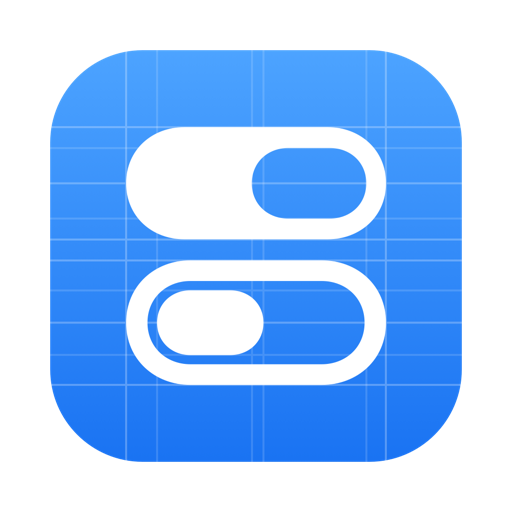
Small utilities for your Mac, in one place.
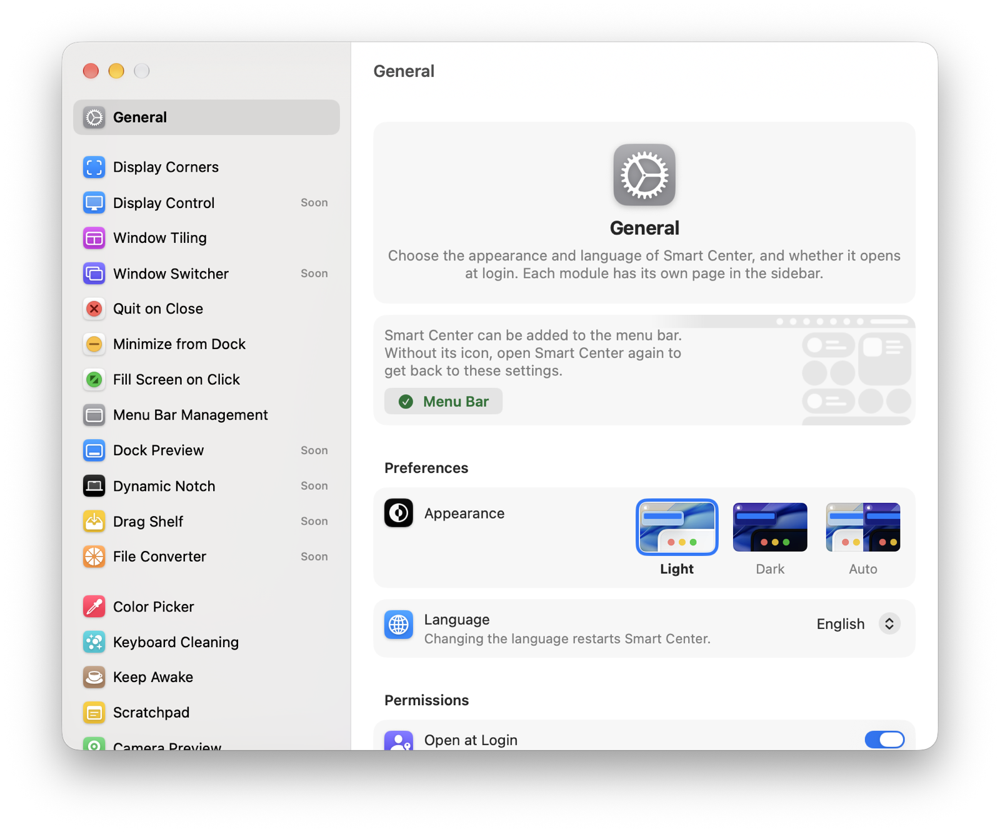
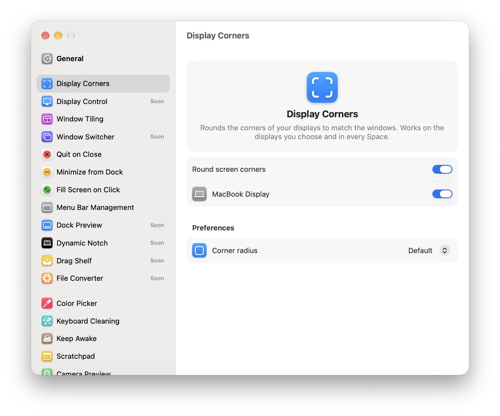
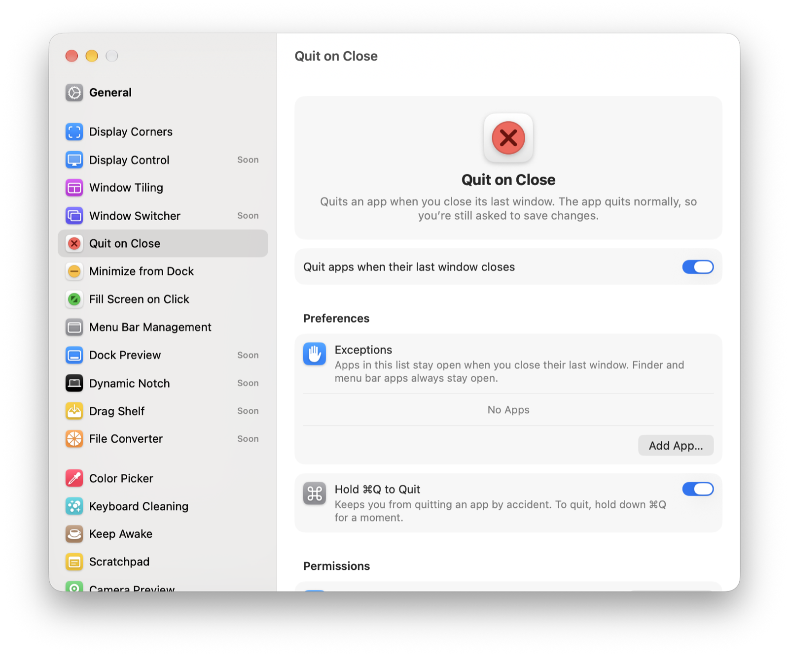
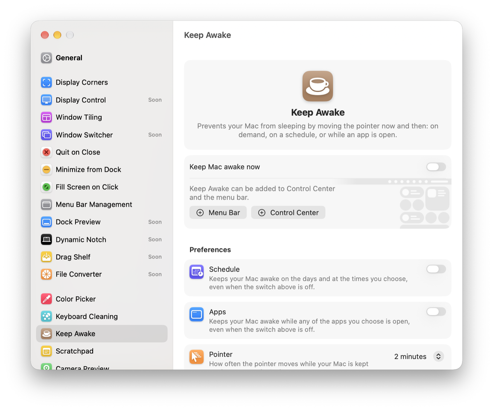
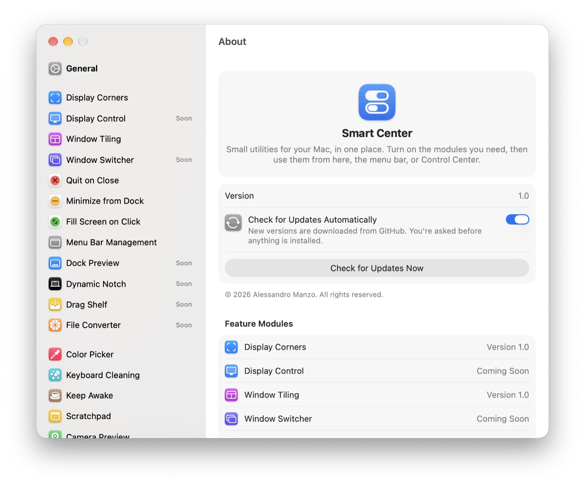
Turn on the modules you want, and use them from the menu bar or Control Center.
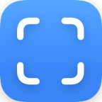
Rounded corners for your displays.

Drag a window to an edge to tile it.

Apps quit when you close their last window.

Click an app’s Dock icon to minimize it.
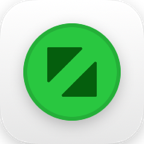
The green button fills the screen.
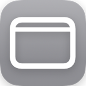
Hide the menu bar icons you don’t need.
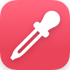
Pick any color on your screen.
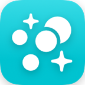
Lock the keyboard while you clean it.
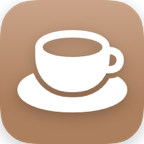
Keep your Mac from going to sleep.
Quick notes, always at hand.

Check your camera before a call.

Copy text from anywhere on your screen.
Paste again what you copied.

Brightness for every display.
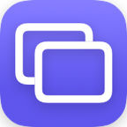
Switch between your windows.

See windows from the Dock.

Make the notch useful.
A place to park your files.

Convert files with a drop.

Shortcuts for every module.
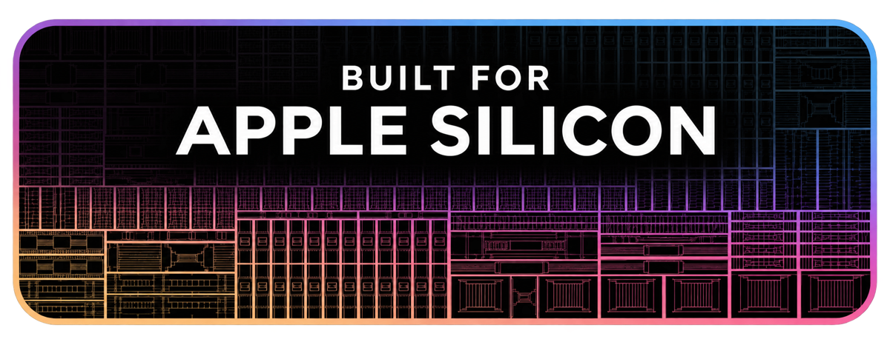
Smart Center runs only on Mac computers with Apple silicon, M1 and later. It doesn’t run on Mac computers with Intel processors.
Smart Center doesn’t collect, send, or share any information.
Your notes, the text you copy, and your settings are saved only on this Mac. No accounts, no analytics.
Each module asks only for what it needs, and you can change it at any time in System Settings.
Checked by Apple, so macOS opens it without warnings. It connects to the internet only to check for updates.